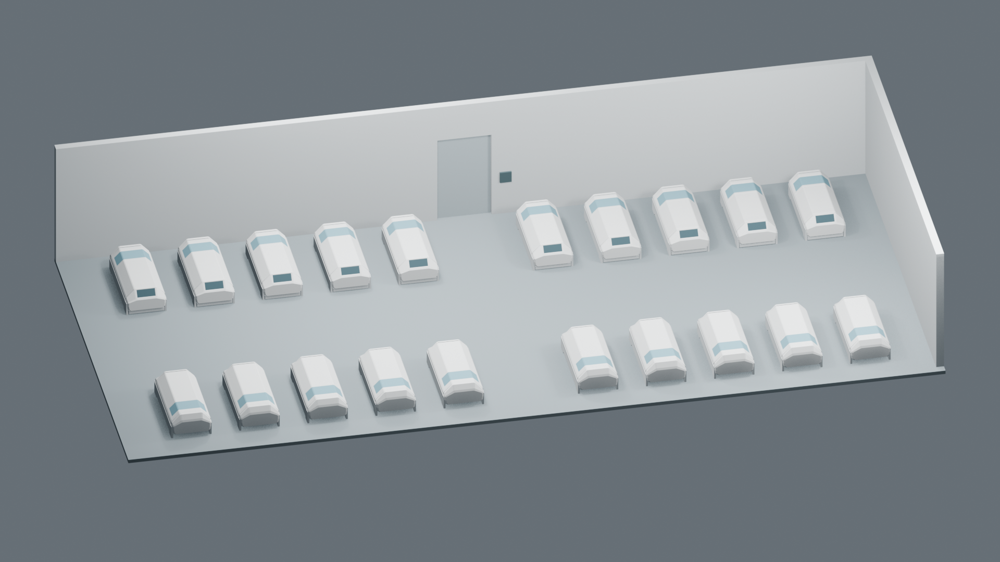
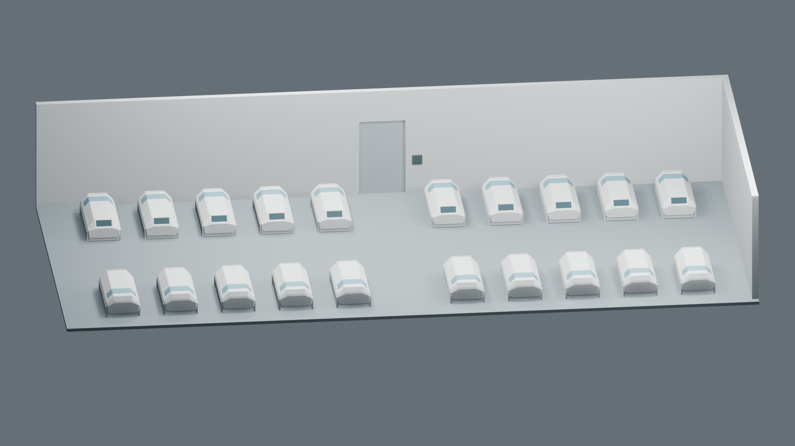
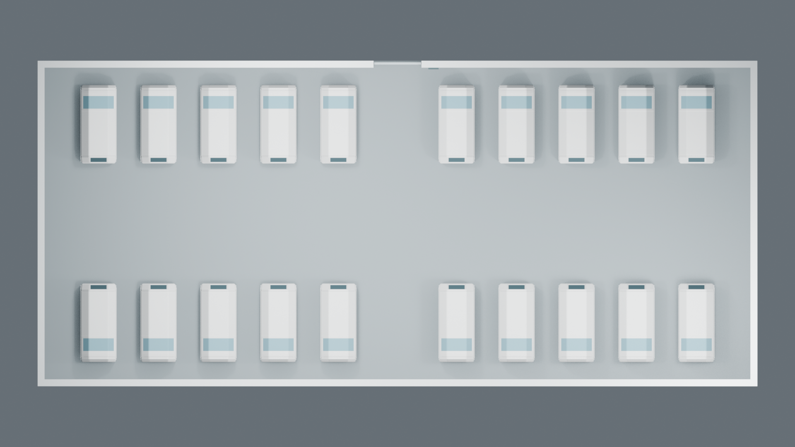

Room 1 · 全室低模 v1
沿用休眠舱 v4.1，按现行工程位置组装整间房。主门保留简洁占位，表面细节留待像素贴图。
内净 20.6 × 9.1 m20 个舱 · 四区各 5 个后墙中央门洞 1.4 × 2.4 m连续墙面与地面

01 / 全室概览。前墙、左墙和顶板仅为观察而隐藏；完整几何保存在工程中。

02 / 较低角度。用于观察轮廓与前后遮挡，仍为候选镜头。

03 / 布局说明用俯视图。显示四面墙与十字通道，剖去顶板及门洞上方墙面；不代表游戏视角。
全部休眠舱暂时闭合。舱盖开合保留在单舱 v4.1 工程；本次未进行群组开盖避让或人体上下舱验证。主门外观、正式贴图、角色位置与最终镜头仍待确定。层高与门洞尺度沿用工程暂定值。
Blender 工程 · 交接说明与来源 · 工程尺寸与位置 · 单舱 v4.1